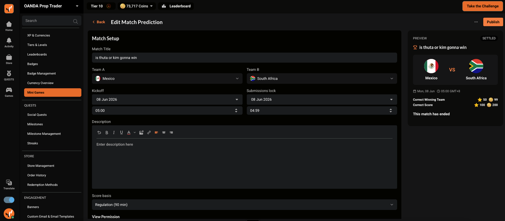
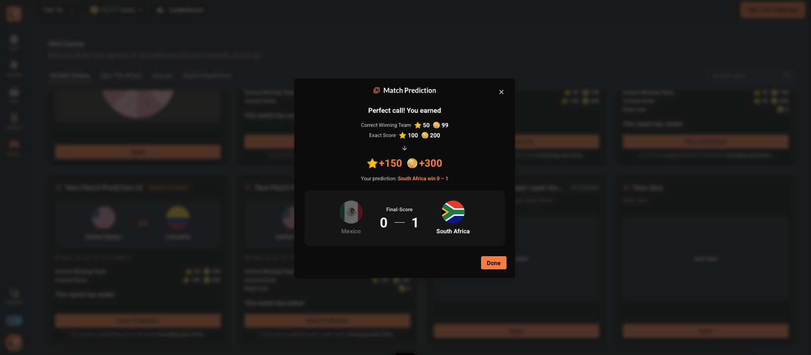

Whisker Wanderers
Name + optional logo
Reusable in future matches
Mini Games / scheduling / reusable teams
Prediction start, prediction end and match kickoff describe different moments. Separating them makes availability clear while reusable teams protect the identity of each match.

Scheduling specification and reusable custom-team extension. The base game was collaborator-led.
Approved specifications + observed CatTrader match
Start ≤ end ≤ kickoff
Explore the product logic
Move through a synthetic same-day schedule. The documented rule keeps kickoff independent from the prediction window, with start ≤ end ≤ kickoff.
Details remain visible; submission is unavailable before prediction start.
View detailsLocal illustration · synthetic examples · no account, reward or configuration changes.
Feature flow
Members can view details and see when predictions begin.
The normal prediction flow is available, using prediction end as the close time.
New submissions and edits close while match information remains visible.
The recorded result and reward context belong to the same match history.
Reusable entity model
Name + optional logo
Reusable in future matches
Stored identity, name and logo
Historical records stay stable

Preserved game states


The working feature / staging evidence
The CatTrader match card and its result view expose different lifecycle facts. A match can have ended while its result is still pending.

Evidence and limits
Design intent and screen hierarchy.
The visible state at capture time.
Deterministic explanation of documented rules.
“Smash prediction” is interpreted here as the product’s Match Prediction feature. A verified Figma frame for the later scheduling/custom-team extension and its release status remain missing.
Feature walkthrough · updated 12 October 2026. Screens and source records are curated for explanation; no unverified adoption or business-impact claim is made.